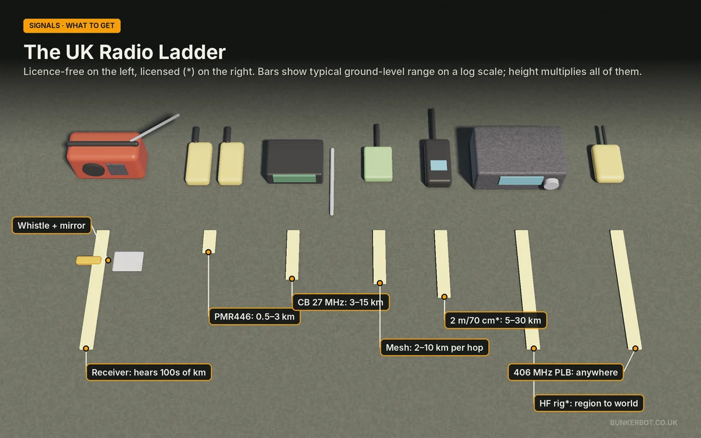
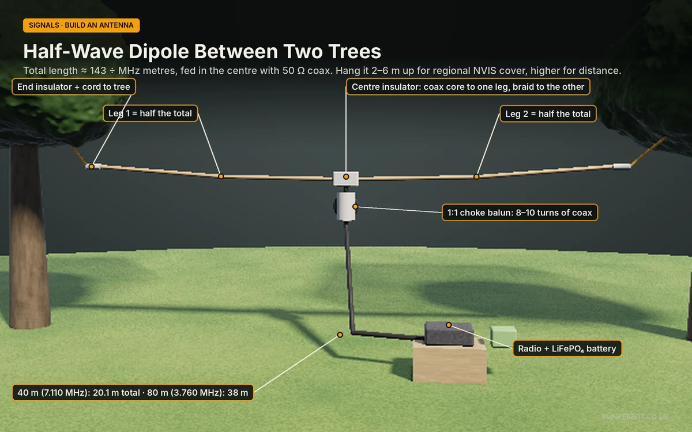
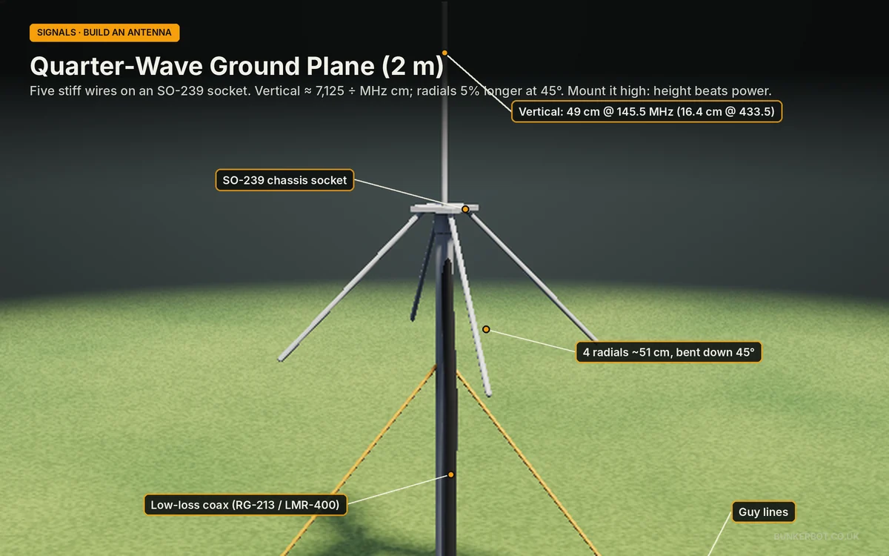
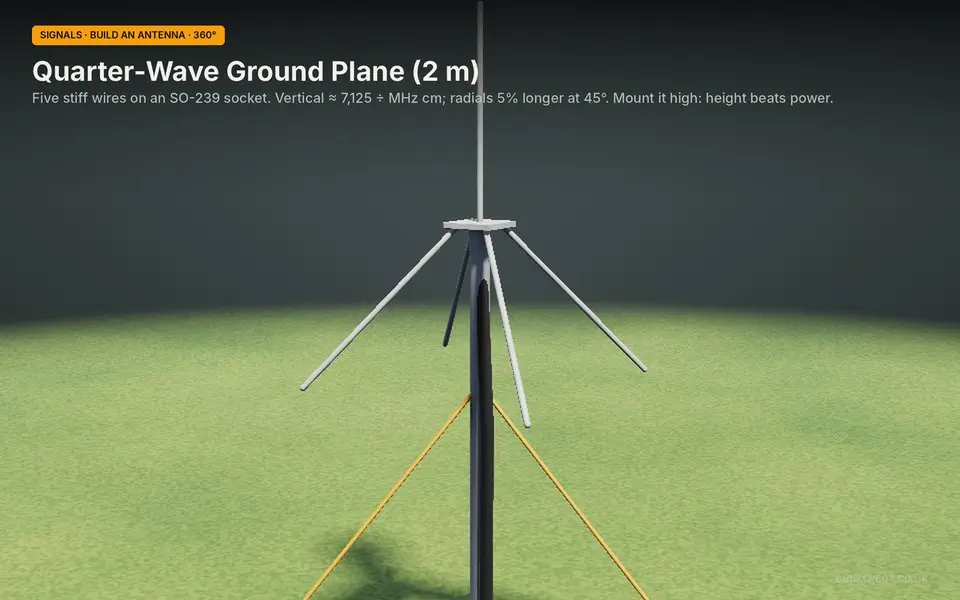
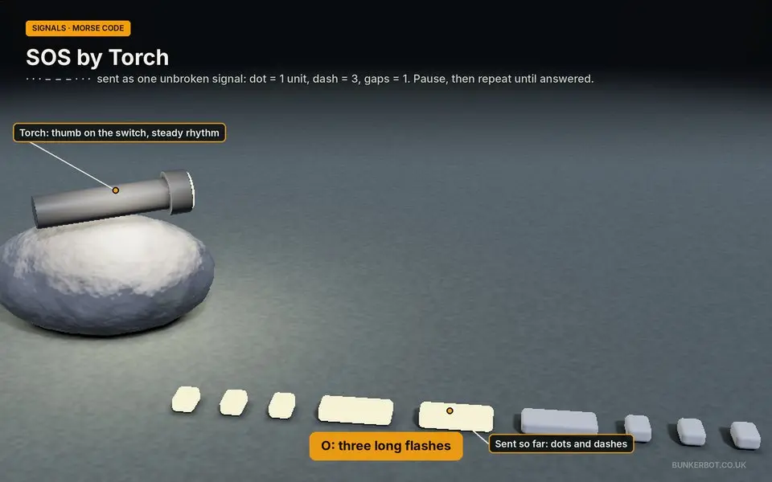
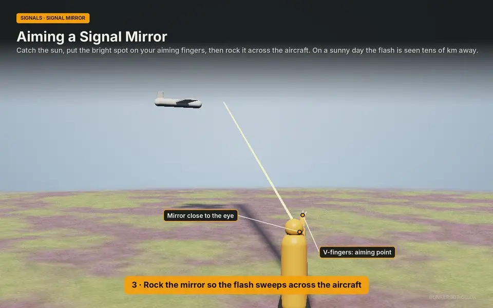
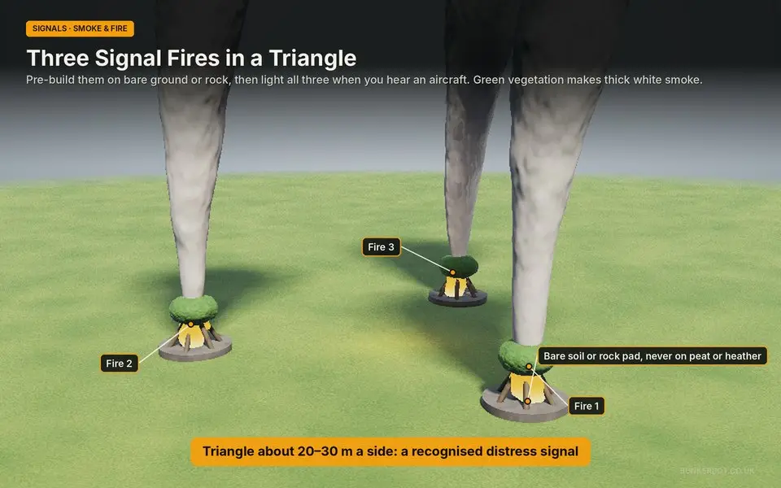
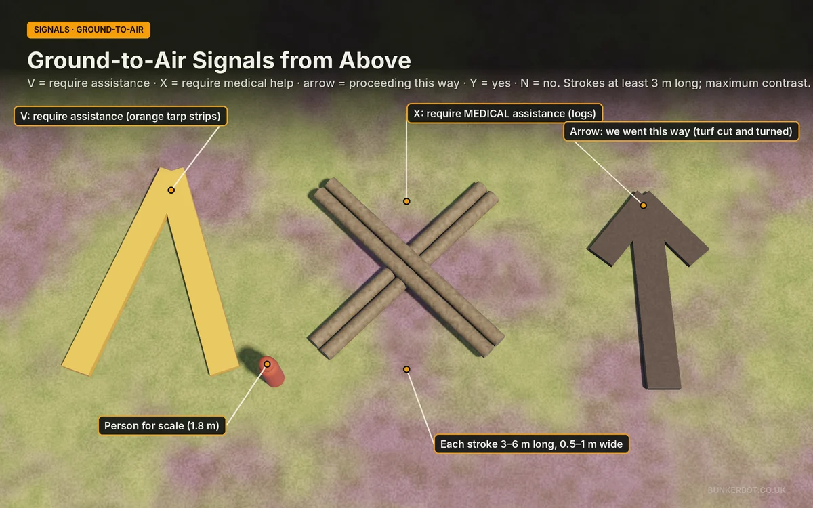
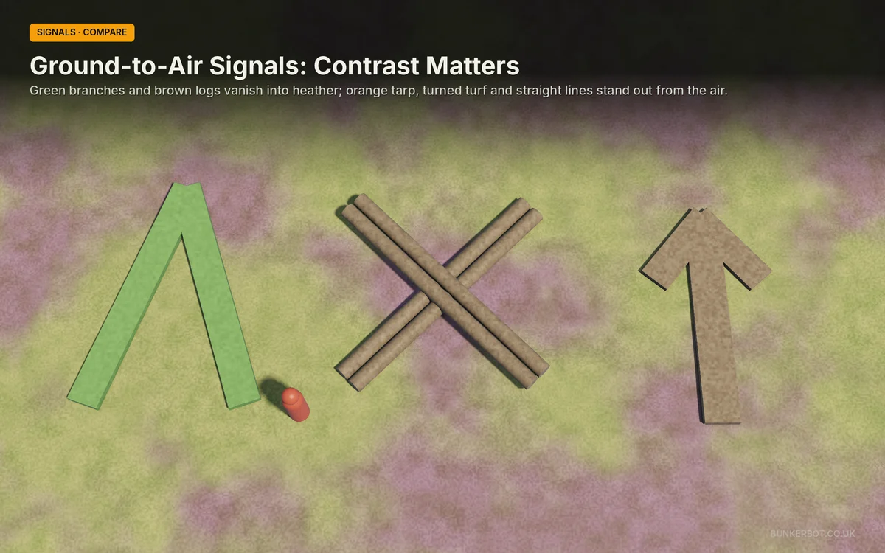
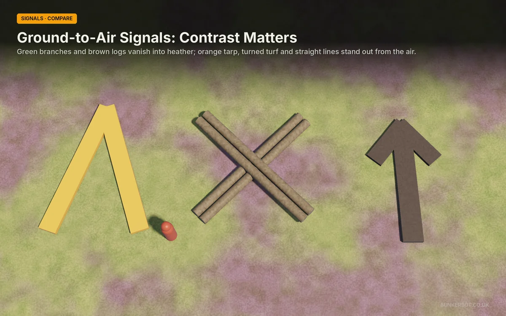

Signals & Radio
When the phone network is down, the people who can still talk, or be seen, are the ones who get help.
Without a licence you may transmit on: PMR446 walkie-talkies (0.5 W, fixed antenna), CB radio (27 MHz, 4 W FM/AM, 12 W SSB) and licence-exempt LoRa mesh (Meshtastic on 869.4–869.65 MHz). Everything else needs a licence. Listening to broadcast stations, amateurs, CB and PMR is legal. Listening to the emergency services and other private traffic is not. The best long-range upgrade is the UK Foundation amateur licence: one short course and exam, then up to 25 W on HF/VHF/UHF. No radio? Six whistle blasts or torch flashes, a one-minute pause, repeat. A V laid out on open ground means "require assistance"; an X means "require medical assistance". First choice in a real emergency is still 999/112. Phones send your location automatically, and iPhone 14 and later can text emergency services by satellite. This page complements the site's Communications section (theory, codes, radio basics) and the Radio Freqs tool.
UK radio law is set by the Wireless Telegraphy Act 2006 and Ofcom licences, exemptions and Interface Requirements (IR). These change, so check Ofcom before you buy or transmit. Northern Ireland follows the same Ofcom rules.
1. Comms Priorities
| Priority | Job | Best tools |
|---|---|---|
| 1. Get help | Reach rescuers | 999/112 (any network, location sent automatically), emergencySMS, satellite SOS, PLB (406 MHz), whistle/torch, ground-to-air signals |
| 2. Get information | Know what's happening | FM/AM/LW/shortwave receiver, Emergency Alerts on phones, local BBC radio |
| 3. Talk to your group | Coordinate family, neighbours and the retreat | PMR446, CB, Meshtastic; amateur VHF/UHF if licensed |
| 4. Reach further | Town to town, region to region | Amateur HF (licensed), CB SSB, mesh relays on high ground |
Listen more than you transmit. A receiver costs £20 and needs no licence. It tells you where the floods, roadblocks and water stations are, and it reveals nothing about you.

2. UK Radio Law at a Glance
| Service | Licence? | Power / rules | Typical real range | Notes |
|---|---|---|---|---|
| PMR446 | ❌ None | 0.5 W ERP, 16 channels at 446.0–446.2 MHz, fixed antenna, handheld only | 0.5–3 km in towns, 5–10 km hill to hill | Analogue FM, plus digital (DMR/dPMR446) radios. Must be type-approved PMR446 sets |
| CB (27 MHz) | ❌ None (since 2006) | 4 W FM/AM, 12 W PEP SSB; 40 UK FM + 40 CEPT channels | 3–15 km ground wave; SSB "skip" across Europe in good conditions | External antennas allowed. Amplifiers ("burners") are illegal |
| LoRa mesh (Meshtastic, MeshCore) | ❌ None | 869.4–869.65 MHz: up to 500 mW ERP, 10% duty cycle (other 868 MHz sub-bands 25 mW, 1% or less) | 2–10 km; 50+ km between hilltops | Text only. Keep the region set to EU_868 |
| Amateur (ham) radio | ✅ Ofcom licence after exam | Foundation 25 W, Intermediate 100 W, Full 1 kW (most bands) | Local to worldwide | Self-built antennas and kits allowed; callsign required |
| Marine VHF | ✅ Ship Radio / Ship Portable Radio Licence plus an operator's SRC certificate | Ch 16 (156.8 MHz) distress | 10–30 km at sea | Free Ship Portable licence online; one-day RYA SRC course |
| Aviation (airband) | ✅ Pilots/ground stations only | 121.5 MHz is the air distress frequency | – | Don't transmit on airband |
| PLB (406 MHz) | ❌ Exempt for land use; register it (free, UK Beacon Registry) | Satellite distress beacon | Worldwide | Registration is compulsory on UK vessels and watercraft (since 15 Apr 2026) |
| Receivers & scanners | ❌ To own | – | – | Legal to listen: broadcast, amateur, CB, PMR446. Offence to listen to police, ambulance, private business radio, phone calls, or to pass on what you heard (WTA 2006 s.48) |
Cheap programmable handhelds (Baofeng UV-5R, Quansheng UV-K5 and similar) are legal to own and listen with, but not to transmit without an amateur licence, including on PMR446 channels, because they have removable antennas and transmit at up to 5–10 W. Buy one as your first licensed radio, not as a walkie-talkie.
International Radio Regulations say nothing in them prevents a station in distress from using any means at its disposal to attract attention and get help. That's a last-resort principle for real life-or-death emergencies, not a loophole. Try 999/112, satellite SOS and a PLB first.
3. Frequencies to Write Down
Print this table and keep it with every radio.
Licence-free
| What | Frequency | Use |
|---|---|---|
| PMR446 ch 1–8 | 446.00625 – 446.09375 MHz (12.5 kHz steps) | Group comms. Agree a primary and a backup channel, plus a CTCSS sub-tone to cut out strangers |
| PMR446 ch 9–16 | 446.10625 – 446.19375 MHz | Added in 2018. Older 8-channel sets can't use them |
| CB UK FM ch 9 | 27.68125 MHz | Traditional emergency channel (lightly monitored today) |
| CB UK FM ch 19 | 27.78125 MHz | Traditional road/"breaker" channel |
| CB CEPT ch 9 / 19 | 27.065 / 27.185 MHz | Same customs on EU/CEPT channels (FM, AM or SSB) |
| Meshtastic EU_868 | 869.525 MHz (default) | Text mesh |
Listen-only (anyone)
| What | Frequency | Why |
|---|---|---|
| BBC Radio 4 FM | 92.4–94.6 MHz (varies by area) | National news. Note your local frequency |
| BBC local radio | See your regional guide | Floods, water stations, rest centres |
| Amateur 2 m FM calling | 145.500 MHz | Hams monitor it. In a disaster, someone may be relaying news |
| Amateur 70 cm FM calling | 433.500 MHz | As above; 433.700 MHz is an emergency-comms priority channel |
| Amateur HF emergency centres of activity (IARU Region 1) | 3.760, 7.110, 14.300, 18.160, 21.360 MHz (SSB) | Where emergency traffic is heard when a region is cut off |
| Marine VHF ch 16 | 156.800 MHz | Coastal distress and Coastguard calls |
Licensed (once you have your Foundation licence)
| What | Frequency |
|---|---|
| 2 m FM simplex calling | 145.500 MHz, then move to a working channel |
| 70 cm FM simplex calling | 433.500 MHz |
| GB2RS weekly amateur news | 145.525 MHz and others |
| Local repeaters | Search the UK repeater list (ukrepeater.net) for your area and note the CTCSS tones |
| HF NVIS (regional, 0–400 km) | 3.5–3.8 MHz (night) and 7.0–7.2 MHz (day) |
4. What Radios to Get (by Budget)
| Tier | Buy | Approx. cost | Why |
|---|---|---|---|
| 0. Everyone | Wind-up / solar / USB AM-FM-LW-SW receiver with a torch and phone charge-out, plus spare AA cells | £25–60 | Information when the internet is gone. Look for real shortwave/SSB coverage (e.g. Tecsun PL-330-class) if you want to hear further |
| 0. Everyone | Pair of PMR446 radios (IP54+ rated, AA-compatible) | £40–120 | Family and street comms, no licence. Choose models that take AA batteries as well as packs |
| 0. Everyone | Whistle, signal mirror, head torch with strobe | £15 | Rescue signalling that never runs flat (except the torch) |
| 1. Prepared | 406 MHz PLB (registered) or satellite messenger (two-way text; subscription) | PLB £200–300; messenger £250–400 + plan | Guaranteed rescue alert from anywhere in the UK, including deep valleys with no signal |
| 1. Prepared | Two or more Meshtastic nodes (e.g. Heltec V3, LilyGO T-Echo, RAK WisMesh) + one solar relay on high ground | £30–90 each | Licence-free encrypted texting across a village or valley via your phone, plus GPS position sharing |
| 1. Prepared | RTL-SDR dongle + laptop or phone | £30–40 | Hear airband (listening only, see §2), amateur, weather satellites, ADS-B, the whole spectrum |
| 1. Prepared | CB rig (UK/EU approved, FM/AM/SSB) + vehicle or base antenna | £100–250 | Further than PMR446, licence-free. SSB can reach across the country in good conditions |
| 2. Committed | Foundation licence (RSGB-approved course and exam, online or local club) | Low: many clubs train for free; the exam fee is modest | Unlocks 25 W, repeaters, HF, APRS, Winlink email over radio, and home-built antennas |
| 2. Committed | Dual-band 2 m/70 cm handheld (Yaesu/Icom/Kenwood, or budget Baofeng/Quansheng) + better antenna (e.g. Nagoya-type whip) | £30–250 | Local and repeater comms with the ham community |
| 2. Committed | 25–50 W dual-band mobile in the car/house + roof antenna | £200–400 | The workhorse local station: 20–50 km simplex from a good location |
| 3. Dedicated | HF transceiver (e.g. Icom IC-7300 class at home; Xiegu G90 / Yaesu FT-891 portable) + wire antenna + LiFePO₄ battery + solar | £600–1,500 | Region-wide and national contact with no infrastructure at all, using SSB, CW (Morse) and digital modes |
| 3. Dedicated | Spare handheld + receiver in a sealed metal box (EMP/lightning reserve) | £50–150 | Insurance against a single failure. See NBC/EMP |
Standardise on AA/AAA (or USB-C charging) across radios and torches. Keep lithium AAs in the bag (they're best in the cold) and rechargeables at home, charged from solar. A handheld lasts about 1–2 days of light use per pack. Listening costs little; transmitting drains the battery fast.
5. Range: Height, Antennas & Power
VHF/UHF radio (PMR446, Meshtastic, 2 m, 70 cm, marine) travels in straight lines. Your range is set by the radio horizon, not the wattage:
, with heights in metres. Two people at 1.5 m: about 10 km max, usually much less with trees and buildings. One radio on a 300 m hill: 75+ km to anyone with a view of it.
What actually improves range, in order:
- Height. Climb a hill or ridge, go upstairs, put the antenna on a mast. Doubling antenna height beats doubling power.
- A better antenna (where it's legal to change it: CB, amateur, receivers). A full-size external antenna can outperform a rubber duck by 5–10× effective power.
- Less feeder loss. Use short, good coax (RG-213 or LMR-400 for long runs; thin RG-58 loses about half your power in roughly 10 m at UHF).
- A quieter mode. CW (Morse) and digital modes such as FT8 or JS8Call get through when voice can't.
- Power. It helps last, and it costs batteries and reveals your position.
HF (3–30 MHz) bends round the earth (ground wave) and bounces off the ionosphere (skywave). For regional comms (0–400 km) use NVIS (Near-Vertical Incidence Skywave): a dipole only 2–6 m off the ground on 80 m at night or 40 m by day fires the signal straight up so it rains down over the whole region, with no gaps behind hills. That's ideal for the Pennines.
6. Build Your Own Antennas
Transmitting on home-built antennas: CB and licensed amateur only. Anyone may build receive antennas.
6a. Half-wave dipole (HF): the most useful wire antenna there is

- Total length (m) ≈ 143 ÷ frequency (MHz). Each leg is half of that.
- 3.760 MHz (80 m): 38.0 m total, 19.0 m per leg.
- 7.110 MHz (40 m): 20.1 m total, 10.1 m per leg.
- 14.300 MHz (20 m): 10.0 m total, 5.0 m per leg.
- 27.185 MHz (CB ch 19): 5.26 m total, 2.63 m per leg.
- You need: insulated wire (any copper, 1–2.5 mm²), a centre insulator (plastic block or chopping-board offcut), two end insulators, cord, coax (50 Ω), connectors, and ideally a 1:1 choke balun (8–10 turns of the coax round a 15 cm former right at the feed point).
- Method:
- Cut each leg 3–5% long.
- Fix the legs to the centre insulator; solder the coax core to one leg and the braid to the other.
- Haul it up.
- Trim both legs equally until the SWR meter (or the radio's) reads under 1.5:1.
- Inverted V: one mast in the middle, ends sloping down at 45° or more. It takes less space and is nearly as good.
6b. Quarter-wave ground plane (2 m / 70 cm / CB)


- Element length (cm) ≈ 7,125 ÷ frequency (MHz), with radials about 5% longer.
- 145.5 MHz: vertical 49 cm, radials ~51 cm.
- 433.5 MHz: vertical 16.4 cm, radials ~17 cm.
- 27.4 MHz (CB): vertical 2.6 m (too long for most; use a commercial CB whip).
- You need: an SO-239 panel socket, 5 lengths of stiff wire (2.5 mm² copper, coat-hanger or brazing rod), solder, a pole or mast.
- Method: solder the vertical element to the centre pin and bolt the four radials to the corner holes. Bend the radials down 45° and mount it as high as you can. Even 6 m up a pole transforms a handheld's range.
6c. Roll-up J-pole / slim jim (2 m)
A slim jim cut from 300 Ω ladder line (about 1.5 m) rolls into a pocket, hangs from a tree branch with cord, and outperforms a handheld's stub antenna by a wide margin. Follow a published cutting chart for your feeder's velocity factor and fine-tune the feed tap for low SWR.
6d. Receive-only long wire
10–30 m of any wire, as high as you can get it and clipped to a shortwave receiver's whip, pulls in distant AM and shortwave stations at night. No licence needed.
Never put an antenna where it could fall onto, or be thrown over, power lines. Disconnect and earth feeders outside before thunderstorms. Keep people well away from transmitting antennas above 25 W.
7. Morse Code
Morse is slow, but it gets through. A weak CW (Morse) signal is readable when voice is lost in the noise, and the same code works with a torch, a mirror, a whistle, a car horn or by tapping on pipes.

Timing (the whole system)
| Element | Length |
|---|---|
| Dot ( · ) | 1 unit |
| Dash ( − ) | 3 units |
| Gap inside a letter | 1 unit |
| Gap between letters | 3 units |
| Gap between words | 7 units |
For light signals, 1 unit ≈ 0.3–0.5 seconds for beginners.
The code
| Letter | Code | Letter | Code | Letter | Code | Digit | Code |
|---|---|---|---|---|---|---|---|
| A | · − | J | · − − − | S | · · · | 1 | · − − − − |
| B | − · · · | K | − · − | T | − | 2 | · · − − − |
| C | − · − · | L | · − · · | U | · · − | 3 | · · · − − |
| D | − · · | M | − − | V | · · · − | 4 | · · · · − |
| E | · | N | − · | W | · − − | 5 | · · · · · |
| F | · · − · | O | − − − | X | − · · − | 6 | − · · · · |
| G | − − · | P | · − − · | Y | − · − − | 7 | − − · · · |
| H | · · · · | Q | − − · − | Z | − − · · | 8 | − − − · · |
| I | · · | R | · − · | 9 | − − − − · | ||
| 0 | − − − − − |
Useful signals:
- SOS · · · − − − · · · sent as one unbroken signal.
- CQ = calling anyone.
- K = over, go ahead.
- AR = end of message.
- SK = end of contact.
- R = received.
- ? (· · − − · ·) = say again.
- QTH = my location is.
- QRZ = who is calling me?
- 73 = best regards.
Learn it properly:
- Learn by sound, not by looking at the chart. Use the Koch method (start with two letters at full speed and add one at a time once you reach 90% accuracy) with Farnsworth spacing (fast characters, long gaps).
- The free site LCWO.net and phone apps do this for you.
- 15 minutes a day gets most people to a usable 10–12 words a minute in 6–8 weeks.
8. Distress Signals Without a Radio
| Signal | How | Notes |
|---|---|---|
| UK mountain distress signal | Six whistle blasts or torch flashes in a minute, pause one minute, repeat | Keep going until someone reaches you, even after you hear a reply: rescuers may be homing in on it. Reply signal = three in a minute |
| SOS | · · · − − − · · · by light, sound, or tracks in snow or sand | Universal |
| Threes | Three fires, three piles of stones, three shots | The international "groups of three" distress signal |
| Body signal | Both arms raised in a Y = "yes, we need help, pick us up"; one arm up, one down = "no help needed" | Aimed at helicopters. Stand in the open, face the aircraft |
| Bright colour & movement | Wave an orange bivvy bag, jacket or tarp in big slow arcs | Movement catches the eye far better than a static colour |
| Marine pyrotechnics | Red hand flare (night), orange smoke (day) | Distress only. Every red flare triggers a full Coastguard response |
| Strobe / headlights | Torch strobe mode; car headlights flashed in groups of six | Visible for miles at night |
Rescuers search where you were expected to be. Unless you're in immediate danger, stay near your route, vehicle or last known position. Lay out signals, make yourself visible, and save your strength.
9. Signal Mirrors
On a sunny day a signal mirror's flash can be seen by aircraft tens of kilometres away, much further than any whistle or torch. It's the best rescue tool for its weight, and needs no batteries.

- Purpose-made mirrors (glass or polycarbonate, with a sighting hole/retro-reflective aimer) are far easier to aim.
- Aiming with a sighting mirror:
- Look through the hole at the aircraft.
- Find the bright fireball dot in the aimer.
- Tilt the mirror until the dot sits on the aircraft.
- Aiming an improvised mirror (CD, phone screen, foil on card, polished tin lid, car mirror):
- Hold out a V of two fingers with the target between them.
- Catch the sun so the bright spot lands on your fingers.
- Rock the mirror so the spot flicks across the V.
- Sweep the horizon even when you can't see anyone: ships, aircraft and hillsides may be watching.
- Don't hold the beam on a pilot once they've seen you (they'll waggle their wings or turn towards you). Flash occasionally to keep them on you.
10. Smoke & Fire Signals

- Contrast is everything.
- White smoke (green leaves, fresh bracken, damp moss or grass on a hot fire) shows against dark forest and moorland.
- Dark smoke (oily rags, a little engine oil or rubber; toxic, so stay upwind) shows against snow and pale cloud.
- Three fires in a triangle, roughly 20–30 m apart, is the classic distress pattern. One big fire is still far better than nothing.
- Pre-build them:
- Lay a platform (green logs on wet ground).
- Add dry tinder and kindling under a tent of sticks.
- Pile the smoke material on top, with a cover against rain.
- When you hear an engine, light them all fast (a ferro rod or a candle-stub fire starter in each).
- Night: bright flame beats smoke. A single tall fire on a ridge can be seen for many kilometres.
- Wind flattens smoke. Build in the open but out of the strongest gusts, and add plenty of smoke material in short bursts.
Open fires on moorland, peat and most open-access land are prohibited, and a spreading fire endangers you as much as the rescuers. Use smoke and fire signals only in genuine distress, on mineral soil, rock or snow, away from peat, heather and dry grass. Have water or a beater ready. See Fire & Warmth.
11. Ground-to-Air Signals
These five symbols are internationally agreed (ICAO Annex 12) and printed in the UK Coastguard's Life Saving Signals card.



| Symbol | Meaning |
|---|---|
| V | Require assistance |
| X | Require medical assistance |
| N | No / negative |
| Y | Yes / affirmative |
| ↑ (arrow) | Proceeding in this direction |
- Size: each stroke at least 3 m (10 ft) long, and ideally 6 m or more, with strokes about 0.5–1 m wide.
- Contrast:
- orange or silver survival blankets, tarps, clothing, rocks or logs on grass;
- turf cut and turned over;
- branches on snow, or trenches trampled into snow (they cast dark shadows).
- Shape: straight lines and sharp angles (nature has none). Lay the symbol in the most open spot, away from tree shadow.
- Aircraft replies: a pilot who has seen and understood usually rocks the wings (by day) or flashes green lights (by night).
- When leaving: add an arrow pointing the way you went, and leave a note (time, direction, condition) in a visible, weighted bag.
12. Off-Grid Text Networks (Mesh)
Meshtastic (and the newer MeshCore) turns small LoRa radios into a licence-free, encrypted text network.
- Each node relays messages for the others, so three nodes on a ridge can link a whole valley.
- Pairing: you type on your phone over Bluetooth; there's no SIM and no internet.
- Positions: GPS-equipped nodes share locations on a map, which is useful for tracking a group on a moor.
- Power: a node runs for days on a single 18650 cell, or indefinitely from a 1–2 W solar panel.
- Range: typically 2–10 km at ground level. Hilltop-to-hilltop links of 50–100+ km have been recorded.
- UK settings: region EU_868; leave the default duty-cycle limits on (it's the law). Change the default channel key so your group traffic is private.
- Community networks already cover many UK towns, so a public channel may reach people beyond your group.
Licensed equivalents:
- APRS (144.800 MHz) for position and short messages.
- JS8Call on HF for keyboard messaging across the country on a few watts.
- Winlink for email over radio.
13. Your Comms Plan & Drills
Fill it in now, print it, and put a copy in every bag and radio pouch:
- PACE. Make each step specific:
- Primary: mobile/messaging;
- Alternate: PMR446 ch 3, tone 12;
- Contingency: Meshtastic group channel;
- Emergency: whistle/torch six-blast, notes at the meeting point.
- Schedules (radio windows): radios off to save power, then on at fixed times, e.g. on the hour for 10 minutes, 07:00–21:00. Agree them in advance.
- Call signs and simple codes: first names or nicknames, no addresses on air. Use short brevity codes such as "GREEN" = all fine, "AMBER" = need supplies, "RED" = need help now.
- Rally points and comms points: hilltops or high windows with a view over your area, chosen in advance.
- Drills: a monthly "phones off" day. Test every radio, battery and channel, and send and receive one Morse word by torch.
For anything important, use WHO / WHAT / WHERE / WHEN / NEED, e.g. "Dad. Car stuck A59 near Blubberhouses. Now. Safe, need tow or pick-up." Then confirm it was received ("R" or "copy").
14. Collapse Collapse Protocol: Radio When the Rules Stop Mattering
This section is about a long-term grid-down collapse where law, licensing and enforcement have broken down. Today, transmitting outside your licence or exemption is a criminal offence, and interfering with emergency services endangers lives. Train legally now: get a Foundation licence. BunkerBot accepts no liability for misuse.
- Listening is your biggest advantage. A receiver or SDR tells you who is active, where the trouble is, and whether any authority is still broadcasting. Log what you hear (time, frequency, content).
- Every transmission reveals you. Radio direction-finding is simple with a directional antenna. In a hostile environment:
- keep transmissions short (under 15 seconds) and run on a schedule;
- use the lowest power that works;
- use directional antennas (Yagi, NVIS);
- move after transmitting.
- Codes: pre-agreed one-time codebooks or simple brevity codes are better than clever schemes. Assume everything on air is overheard.
- Salvage:
- Car radios: AM/FM receivers with 12 V supply.
- Old CB rigs: a working CB is gold.
- Coax: satellite-dish coax is 75 Ω but works.
- Wire: electric-fence wire and old mains cable make antennas.
- Power: a 20 W solar panel and a small LiFePO₄ battery run a handheld network indefinitely. See Solar & Power.
- Protect a reserve: a spare handheld, receiver and SDR wrapped in a sealed metal box or tin (not touching the metal), disconnected from any antenna. It's a cheap hedge against EMP or lightning.
- Community net: in a long emergency, a daily net on a fixed channel at a fixed time, with one net control station, lets a whole valley share news, needs and trades. That's exactly how RAYNET and amateur emergency nets operate.
15. Kit Tiers
Tier 0: Basic (£80–200 · no experience)
- Wind-up/solar AM-FM-SW receiver + spare batteries
- Pair of PMR446 radios (AA-compatible) with channels and tones agreed
- Whistle on every bag and jacket; signal mirror; head torch with strobe
- Printed comms plan and frequency card
- Phone: location services on; emergencySMS registered; satellite SOS checked if your phone has it
Tier 1: Prepared (£400–1,000 · a few months)
- Registered 406 MHz PLB or satellite messenger
- 3+ Meshtastic nodes, one solar relay on high ground
- RTL-SDR receiver; CB rig + antenna (vehicle or base)
- Orange survival bag/tarp for ground-to-air signals; marine flares if you're near the coast
- Morse: alphabet learned by sound at 5+ words per minute
Tier 2: Committed (£1,000–2,500 · licensed)
- UK Foundation licence (then Intermediate)
- Dual-band handheld + 25–50 W mobile + home-built ground plane / slim jim
- Join a local radio club or RAYNET group
- Monthly net and drills with your group
Tier 3: Dedicated (£2,500+ · experienced)
- HF transceiver + NVIS dipole + LiFePO₄ + solar
- JS8Call / Winlink / APRS capability
- Spare radios in a sealed metal reserve box
- CW (Morse) on air at 12+ words per minute
- Hilltop relay plan for your region (see British Regions)